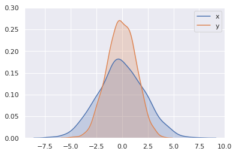
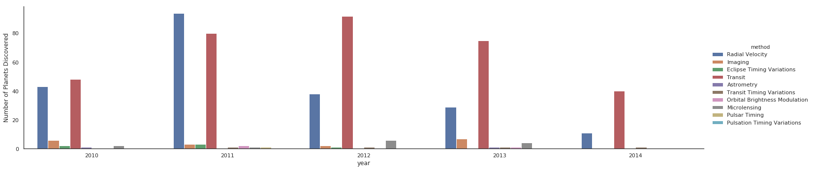
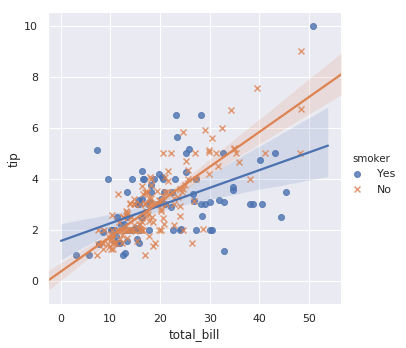
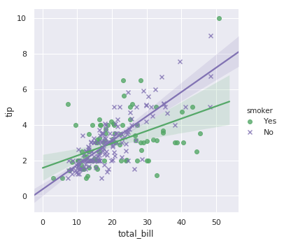
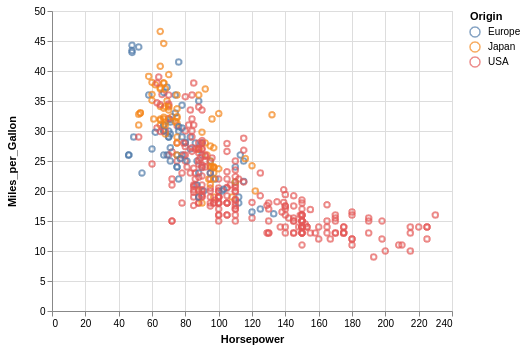

Python Visualization
Having struggled with Python visualizations for a week, I decided to come up with a simple guide to help myself out when it comes to picking up visualization tools for specific plots. There are a number of them and each is good for quite different purposes.
matplotlib
Matplotlib is the basis of statistical plotting in Python which many other visualization tools (e.g., pandas and seaborn) are built on. It is very versatile (which means you can plot anything) but can be verbose and complex to implement. Also, the plots produced are often amazingly ugly. Use it for simple and quick basic plots like line plots. Otherwise, avoid it unless you want to make complex, highly customized plots.
pandas
Some of the DataFrame inbedded methods are quite convenient to use, such as - histogram - scatter plot - etc
seaborn
It is well integrated with Pandas DataFrames and has high-level commands (with automatic labelling and grouping) which make plotting easy. It can be the go-to library for a number of well-defined plots such as - heatmaps (for counts and correlation matrices) - pairplots (for exploring inter-correlations) - facetgrid (for plotting multiple subplots in different categories) - cluster maps (for cluster analysis) # to be added
altair
Altair is a declarative statistical visualization libary based on Vega and Vega-Lite. It is elegant and simple, and produces beautiful plots. It also easily makes interactive plots. In short, it is amazing. Use it whenever you can.
import numpy as np
import pandas as pd
from IPython.display import HTML
Matplotlib
plt.plot
import matplotlib.pyplot as plt
%matplotlib inline
x = np.linspace(0, 10, 30)
y = 3*x + 5
plt.plot(x, y)
plt.xlabel('x')
plt.ylabel('y')
Text(0, 0.5, 'y')

plt.figure(figsize=(15,10))
plt.subplot(2,2,1)
plt.plot(x, y, '--', color='red')
plt.subplot(2,2,2)
plt.plot(x, y, 'o', color='black')
plt.subplot(2,2,3)
plt.plot(x, y, '-.', color='c')
plt.subplot(2,2,4)
plt.plot(x, y, 'r--', x, 10*y**2, 'cs', x, y**3, 'm^')
[<matplotlib.lines.Line2D at 0x7f739ab26630>,
<matplotlib.lines.Line2D at 0x7f739aaccc50>,
<matplotlib.lines.Line2D at 0x7f739aaccf98>]

Pandas
pd.plot
df.plot plots the index against each column, so we often need to specify the two columns againts which we want to plot. A often used method is df.groupby, which summarizes the data by groups and the group names become the index to be passed to df.plot.
df = pd.DataFrame({'x':x, 'y':y})
df.plot() # plots the index against each column
<matplotlib.axes._subplots.AxesSubplot at 0x7f739a773da0>
df.plot(x='x',y='y') # so we need to specify the axes
<matplotlib.axes._subplots.AxesSubplot at 0x7f739aa773c8>
df.plot(x='x', y='y', kind='scatter')
<matplotlib.axes._subplots.AxesSubplot at 0x7f739a9e2f60>
df2 = pd.DataFrame({'country':['Australia', 'Australia', 'USA','USA','USA'],
'year':[2015, 2016, 1980, 1981, 1982],
'unemployment':[6.06, 5.72, 7.14, 7.60, 9.71]})
HTML(df2.to_html(classes="table table-stripped table-hover"))
| country | year | unemployment | |
|---|---|---|---|
| 0 | Australia | 2015 | 6.06 |
| 1 | Australia | 2016 | 5.72 |
| 2 | USA | 1980 | 7.14 |
| 3 | USA | 1981 | 7.60 |
| 4 | USA | 1982 | 9.71 |
df2.groupby('country')['unemployment'].mean()
# now it has meaningful index that can be passed directly to .plot()
country
Australia 5.89
USA 8.15
Name: unemployment, dtype: float64
df2.groupby('country')['unemployment'].mean().plot(kind='bar')
<matplotlib.axes._subplots.AxesSubplot at 0x7f739af3a518>

Seaborn
First, some univariate plots:
Histograms and KDE
import seaborn as sns
sns.set() # setting the style of Seaborn plots
data = np.random.multivariate_normal([0,0],[[5,2],[2,2]], size=2000)
data = pd.DataFrame(data, columns=['x','y'])
HTML(data.head().to_html(classes="table table-stripped table-hover"))
| x | y | |
|---|---|---|
| 0 | -3.706836 | -2.738933 |
| 1 | 1.862120 | 1.403838 |
| 2 | -0.116846 | -0.057492 |
| 3 | 0.598859 | -0.080863 |
| 4 | 0.390465 | 0.250044 |
for col in 'xy':
plt.hist(data[col], normed=True, alpha=0.5)
/home/molly/anaconda3/lib/python3.7/site-packages/matplotlib/axes/_axes.py:6521: MatplotlibDeprecationWarning:
The 'normed' kwarg was deprecated in Matplotlib 2.1 and will be removed in 3.1. Use 'density' instead.
alternative="'density'", removal="3.1")
/home/molly/anaconda3/lib/python3.7/site-packages/matplotlib/axes/_axes.py:6521: MatplotlibDeprecationWarning:
The 'normed' kwarg was deprecated in Matplotlib 2.1 and will be removed in 3.1. Use 'density' instead.
alternative="'density'", removal="3.1")

sns.kdeplot(data['x'],data['y']) # if both cols passed at the same time
<matplotlib.axes._subplots.AxesSubplot at 0x7f7398608588>

for col in 'xy':
sns.kdeplot(data[col], shade=True)
plt.ylim(0, 0.3)

sns.distplot(data['x'])
sns.distplot(data['y'])
plt.ylim(0, 0.35)
(0, 0.35)

jointplot
sns.jointplot('x','y', data, kind='kde')
<seaborn.axisgrid.JointGrid at 0x7f7398440d30>

pairplot
Joint plots for more than two dimensions. Useful for exploring multivariate correlations.
iris = sns.load_dataset('iris')
HTML(iris.head().to_html(classes="table table-stripped table-hover"))
| sepal_length | sepal_width | petal_length | petal_width | species | |
|---|---|---|---|---|---|
| 0 | 5.1 | 3.5 | 1.4 | 0.2 | setosa |
| 1 | 4.9 | 3.0 | 1.4 | 0.2 | setosa |
| 2 | 4.7 | 3.2 | 1.3 | 0.2 | setosa |
| 3 | 4.6 | 3.1 | 1.5 | 0.2 | setosa |
| 4 | 5.0 | 3.6 | 1.4 | 0.2 | setosa |
sns.pairplot(iris,hue='species',size=2.5)
/home/molly/anaconda3/lib/python3.7/site-packages/seaborn/axisgrid.py:2065: UserWarning: The `size` parameter has been renamed to `height`; pleaes update your code.
warnings.warn(msg, UserWarning)
<seaborn.axisgrid.PairGrid at 0x7f739a8c2e80>

facetgrid
To make histograms on subsets of categories.
tips = sns.load_dataset('tips')
HTML(tips.head().to_html(classes="table table-stripped table-hover"))
| total_bill | tip | sex | smoker | day | time | size | |
|---|---|---|---|---|---|---|---|
| 0 | 16.99 | 1.01 | Female | No | Sun | Dinner | 2 |
| 1 | 10.34 | 1.66 | Male | No | Sun | Dinner | 3 |
| 2 | 21.01 | 3.50 | Male | No | Sun | Dinner | 3 |
| 3 | 23.68 | 3.31 | Male | No | Sun | Dinner | 2 |
| 4 | 24.59 | 3.61 | Female | No | Sun | Dinner | 4 |
tips['tip_pct'] = 100*tips['tip']/tips['total_bill']
HTML(tips.head().to_html(classes="table table-stripped table-hover"))
| total_bill | tip | sex | smoker | day | time | size | tip_pct | |
|---|---|---|---|---|---|---|---|---|
| 0 | 16.99 | 1.01 | Female | No | Sun | Dinner | 2 | 5.944673 |
| 1 | 10.34 | 1.66 | Male | No | Sun | Dinner | 3 | 16.054159 |
| 2 | 21.01 | 3.50 | Male | No | Sun | Dinner | 3 | 16.658734 |
| 3 | 23.68 | 3.31 | Male | No | Sun | Dinner | 2 | 13.978041 |
| 4 | 24.59 | 3.61 | Female | No | Sun | Dinner | 4 | 14.680765 |
grid = sns.FacetGrid(tips, row='sex', col='time', margin_titles=True)
grid.map(plt.hist, 'tip_pct', bins=np.linspace(0,40,15))
# bins make sure every graph has the same x scale
<seaborn.axisgrid.FacetGrid at 0x7f739759b908>

Next, some multivariate plots:
factorplot
with sns.axes_style(style='ticks'): # applying the style to the whole block
g = sns.factorplot('day','total_bill','sex',data=tips, kind='box',
palette='pastel')
g.set_axis_labels('Day','Total Bill')
/home/molly/anaconda3/lib/python3.7/site-packages/seaborn/categorical.py:3666: UserWarning: The `factorplot` function has been renamed to `catplot`. The original name will be removed in a future release. Please update your code. Note that the default `kind` in `factorplot` (`'point'`) has changed `'strip'` in `catplot`.
warnings.warn(msg)

planets = sns.load_dataset('planets')
HTML(planets.head().to_html(classes="table table-stripped table-hover"))
| method | number | orbital_period | mass | distance | year | |
|---|---|---|---|---|---|---|
| 0 | Radial Velocity | 1 | 269.300 | 7.10 | 77.40 | 2006 |
| 1 | Radial Velocity | 1 | 874.774 | 2.21 | 56.95 | 2008 |
| 2 | Radial Velocity | 1 | 763.000 | 2.60 | 19.84 | 2011 |
| 3 | Radial Velocity | 1 | 326.030 | 19.40 | 110.62 | 2007 |
| 4 | Radial Velocity | 1 | 516.220 | 10.50 | 119.47 | 2009 |
with sns.axes_style('white'):
g = sns.factorplot('year', data=planets, aspect=1.5, kind='count')
g.set_xticklabels(step=5)
/home/molly/anaconda3/lib/python3.7/site-packages/seaborn/categorical.py:3666: UserWarning: The `factorplot` function has been renamed to `catplot`. The original name will be removed in a future release. Please update your code. Note that the default `kind` in `factorplot` (`'point'`) has changed `'strip'` in `catplot`.
warnings.warn(msg)
with sns.axes_style('white'):
g = sns.factorplot('year', data=planets, aspect=4, kind='count',
hue='method', order=range(2010,2015))
g.set_ylabels('Number of Planets Discovered')
/home/molly/anaconda3/lib/python3.7/site-packages/seaborn/categorical.py:3666: UserWarning: The `factorplot` function has been renamed to `catplot`. The original name will be removed in a future release. Please update your code. Note that the default `kind` in `factorplot` (`'point'`) has changed `'strip'` in `catplot`.
warnings.warn(msg)

lmplot
HTML(tips.head().to_html(classes="table table-stripped table-hover"))
| total_bill | tip | sex | smoker | day | time | size | tip_pct | |
|---|---|---|---|---|---|---|---|---|
| 0 | 16.99 | 1.01 | Female | No | Sun | Dinner | 2 | 5.944673 |
| 1 | 10.34 | 1.66 | Male | No | Sun | Dinner | 3 | 16.054159 |
| 2 | 21.01 | 3.50 | Male | No | Sun | Dinner | 3 | 16.658734 |
| 3 | 23.68 | 3.31 | Male | No | Sun | Dinner | 2 | 13.978041 |
| 4 | 24.59 | 3.61 | Female | No | Sun | Dinner | 4 | 14.680765 |
sns.lmplot(x='total_bill', y = 'tip', data=tips)
<seaborn.axisgrid.FacetGrid at 0x7f738f7a7940>

sns.lmplot(x='total_bill', y = 'tip', hue='smoker', data=tips,
markers=['o','x'])
<seaborn.axisgrid.FacetGrid at 0x7f738eec9cc0>

sns.lmplot(x='total_bill', y = 'tip', hue='smoker', data=tips,
markers=['o','x'], palette=dict(Yes='g', No='m'))
<seaborn.axisgrid.FacetGrid at 0x7f738eeb0c18>

sns.lmplot(x='total_bill', y = 'tip', hue='day', col='day',
data=tips, col_wrap=2)
<seaborn.axisgrid.FacetGrid at 0x7f738ee00ba8>

heatmap
flights = sns.load_dataset('flights')
HTML(flights.head().to_html(classes="table table-stripped table-hover"))
| year | month | passengers | |
|---|---|---|---|
| 0 | 1949 | January | 112 |
| 1 | 1949 | February | 118 |
| 2 | 1949 | March | 132 |
| 3 | 1949 | April | 129 |
| 4 | 1949 | May | 121 |
flights = flights.pivot(index='month', columns='year', values='passengers')
HTML(flights.head().to_html(classes="table table-stripped table-hover"))
| year | 1949 | 1950 | 1951 | 1952 | 1953 | 1954 | 1955 | 1956 | 1957 | 1958 | 1959 | 1960 |
|---|---|---|---|---|---|---|---|---|---|---|---|---|
| month | ||||||||||||
| January | 112 | 115 | 145 | 171 | 196 | 204 | 242 | 284 | 315 | 340 | 360 | 417 |
| February | 118 | 126 | 150 | 180 | 196 | 188 | 233 | 277 | 301 | 318 | 342 | 391 |
| March | 132 | 141 | 178 | 193 | 236 | 235 | 267 | 317 | 356 | 362 | 406 | 419 |
| April | 129 | 135 | 163 | 181 | 235 | 227 | 269 | 313 | 348 | 348 | 396 | 461 |
| May | 121 | 125 | 172 | 183 | 229 | 234 | 270 | 318 | 355 | 363 | 420 | 472 |
sns.heatmap(flights)
<matplotlib.axes._subplots.AxesSubplot at 0x7f739410c6d8>
df = pd.DataFrame(np.random.randn(35, 35))
sns.heatmap(df.corr(),cmap='coolwarm') # divergent color code
<matplotlib.axes._subplots.AxesSubplot at 0x7f739420d898>
altair
import altair as alt
alt.renderers.enable('notebook')
RendererRegistry.enable('notebook')
cars = alt.load_dataset('cars')
HTML(cars.head().to_html(classes="table table-stripped table-hover"))
| Acceleration | Cylinders | Displacement | Horsepower | Miles_per_Gallon | Name | Origin | Weight_in_lbs | Year | |
|---|---|---|---|---|---|---|---|---|---|
| 0 | 12.0 | 8 | 307.0 | 130.0 | 18.0 | chevrolet chevelle malibu | USA | 3504 | 1970-01-01 |
| 1 | 11.5 | 8 | 350.0 | 165.0 | 15.0 | buick skylark 320 | USA | 3693 | 1970-01-01 |
| 2 | 11.0 | 8 | 318.0 | 150.0 | 18.0 | plymouth satellite | USA | 3436 | 1970-01-01 |
| 3 | 12.0 | 8 | 304.0 | 150.0 | 16.0 | amc rebel sst | USA | 3433 | 1970-01-01 |
| 4 | 10.5 | 8 | 302.0 | 140.0 | 17.0 | ford torino | USA | 3449 | 1970-01-01 |
alt.Chart(cars).mark_point().encode(
x='Horsepower',
y='Miles_per_Gallon',
color='Origin:N'
)

Faceting
alt.Chart(cars).mark_circle(opacity=0.5).encode(
x='Horsepower',
y='Miles_per_Gallon',
color='Origin'
).facet(column='Origin')

Changing the opacity:
alt.Chart(cars).mark_bar(opacity=0.2).encode(
x='Horsepower',
y='Miles_per_Gallon:Q',
color='Origin'
)

Interactions
alt.Chart(cars).mark_point().encode(
x='Horsepower',
y='Miles_per_Gallon',
color='Origin'
).facet(column='Origin').interactive()

Selections
-selection_single(): selecting single element at a time
-selection_multi(): selecting multiple items at once through clicking or mouseover
-selection_interval(): selecting multiple items through brushing
brush = alt.selection_interval()
alt.Chart(cars).mark_point().encode(
x='Horsepower',
y='Miles_per_Gallon',
color=alt.condition(brush, 'Origin', alt.value('lightgray'))
).properties(
selection=brush
)

histograms
count() aggregation function
alt.Chart(cars).mark_bar().encode(
alt.X('Horsepower',bin=alt.BinParams(maxbins=40)), # or simply: bin=True
y='count(*):Q',
color='Origin'
).facet(column='Origin')

Layers
Layers with interaction:
# the 'empty' setting akes all text hidden before any mouseover occurs
pointer = alt.selection_single(on='mouseover',nearest=True,empty='none')
base = alt.Chart().encode(
x='Miles_per_Gallon',
y='Horsepower'
)
chart = alt.layer(
base.mark_point().properties(selection=pointer).encode(color='Origin'),
base.mark_text(dx=8,dy=3,align='left').encode(text=alt.condition(pointer,'Name',alt.value(''))),
data=cars
)
chart